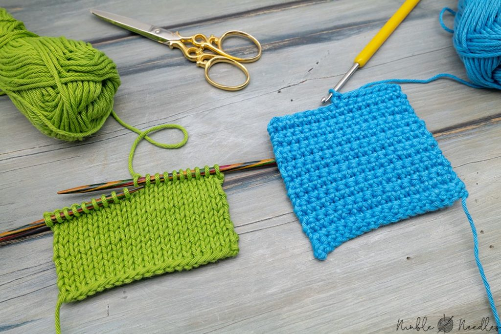

DIY & CRAFTS
I love manual work, it's something that helps me to kill time when I'm bored, to calm down when I'm stressed, and to unwind when I'm too focused on a problem and need to clear my mind and find a new perspective to solve it.
These are my favorite types of craft: